End-to-End ML Pipelines — Reference Notebook#
Companion to ml_cheatsheet.ipynb.
Division of labour between the two notebooks:
Notebook |
Answers |
|---|---|
|
What is this algorithm and how does it work? |
|
In what order do I do things, and what does the glue look like? |
This notebook deliberately does not explain algorithms. Each pipeline is one
continuous code cell from pd.read_csv() to interpretation, so the whole arc is
visible without scrolling through prose. Parameter explanations live in inline
comments.
00 — Which pipeline do I reach for?#
My situation |
Pipeline |
Model families to try first |
|---|---|---|
Target is a number |
1 — Regression |
Ridge -> RandomForest -> XGBoost |
Target is a category, classes roughly balanced |
2 — Classification |
LogisticRegression -> RandomForest |
Target is a category, one class is rare (<10%) |
3 — Imbalanced |
class_weight / SMOTE + XGBoost |
Features far outnumber samples |
4 — High-dimensional |
VarianceThreshold + PCA + linear model |
No target at all, want groups |
5 — Clustering |
KMeans, DBSCAN |
No target, want to flag rare weird rows |
6 — Anomaly detection |
IsolationForest, LOF |
Two questions settle it almost every time: do I have a labelled target, and if so is it a number or a category? Everything after that is a refinement based on class balance and feature-to-sample ratio.
Datasets used#
Pipeline |
Dataset |
Source |
|---|---|---|
1, 5 |
Singapore HDB resale |
|
2 |
Titanic |
seaborn built-in |
3, 4, 6 |
UCI SECOM |
Set the paths in section 01 to match your local data/ folder.
01 — Imports and paths#
Run this once. Every pipeline below depends on it.
# ---- Core -------------------------------------------------------------------
import numpy as np
import pandas as pd
import matplotlib.pyplot as plt
import seaborn as sns
# ---- Preprocessing ----------------------------------------------------------
from sklearn.compose import ColumnTransformer
from sklearn.pipeline import Pipeline
from sklearn.impute import SimpleImputer
from sklearn.preprocessing import StandardScaler, OneHotEncoder
from sklearn.feature_selection import VarianceThreshold
from sklearn.decomposition import PCA
# ---- Model selection --------------------------------------------------------
from sklearn.model_selection import (
train_test_split, KFold, StratifiedKFold,
cross_val_score, cross_validate,
GridSearchCV, RandomizedSearchCV,
)
# ---- Models -----------------------------------------------------------------
from sklearn.linear_model import Ridge, LogisticRegression
from sklearn.ensemble import (
RandomForestRegressor, RandomForestClassifier, IsolationForest,
)
from sklearn.cluster import KMeans
from sklearn.neighbors import LocalOutlierFactor
import xgboost as xgb
# ---- Metrics ----------------------------------------------------------------
from sklearn.metrics import (
mean_squared_error, mean_absolute_error, r2_score,
accuracy_score, precision_score, recall_score, f1_score,
roc_auc_score, average_precision_score,
confusion_matrix, classification_report,
RocCurveDisplay, PrecisionRecallDisplay, ConfusionMatrixDisplay,
precision_recall_curve, silhouette_score,
)
from sklearn.inspection import permutation_importance
# ---- Config -----------------------------------------------------------------
RANDOM_STATE = 42 # set everywhere so results are reproducible
pd.set_option("display.max_columns", 50)
sns.set_theme(style="whitegrid")
# ---- Paths (edit to match your repo) ----------------------------------------
HDB_PATH = "/Users/cheerupdimbo/Documents/ds-sprint-july/ds-sprint-july/projects/projects1_hdb/ResaleflatpricesbasedonregistrationdatefromJan2017onwards.csv"
SECOM_PATH = "/Users/cheerupdimbo/Documents/ds-sprint-july/ds-sprint-july/projects/projects2_secom/uci-secom.csv"
imbalanced-learn is only needed for Pipeline 3. Import it there so the rest of the
notebook still runs if the package is missing.
Pipeline 1 — Regression (HDB resale price)#
When to use#
Signal |
Reading |
|---|---|
Target is continuous (price, yield, thickness, cycle time) |
Regression |
Mix of numeric and categorical predictors |
Needs |
Rows are independent |
Plain |
Red flag: if the target is a count that is mostly zeros, or is bounded 0–1, plain linear regression will misbehave. That is a different model family, not a different pipeline.
The shape of the code below#
read -> feature engineering -> split -> ColumnTransformer -> baseline ->
compare models -> tune the winner -> evaluate on test -> interpret
The split happens before any imputing or scaling. That ordering is the single most important line in the cell.
# =============================================================================
# PIPELINE 1 — REGRESSION: predicting HDB resale price
# =============================================================================
# ---- 1. Load ----------------------------------------------------------------
HDB_PATH = "/Users/cheerupdimbo/Documents/ds-sprint-july/ds-sprint-july/projects/projects1_hdb/ResaleflatpricesbasedonregistrationdatefromJan2017onwards.csv"
df = pd.read_csv(HDB_PATH)
print(df.shape)
print(df.dtypes)
df.head()
# ---- 2. Feature engineering -------------------------------------------------
# Raw columns are not model-ready. Two derived features do most of the work here.
df["month"] = pd.to_datetime(df["month"])
df["sale_year"] = df["month"].dt.year
df["flat_age"] = df["sale_year"] - df["lease_commence_date"]
# "storey_range" arrives as text like "10 TO 12" -> take the midpoint as a number.
storey_bounds = df["storey_range"].str.extract(r"(\d+)\s+TO\s+(\d+)").astype(float)
df["storey_mid"] = storey_bounds.mean(axis=1)
# ---- 3. Define X and y ------------------------------------------------------
TARGET = "resale_price"
num_features = ["floor_area_sqm", "flat_age", "storey_mid", "sale_year"]
cat_features = ["town", "flat_type", "flat_model"]
X = df[num_features + cat_features]
y = df[TARGET]
# ---- 4. Split FIRST, before any fitting -------------------------------------
# Anything learned from the data (medians, category lists, scaling stats) must be
# learned from the training set only. Splitting later leaks test information.
X_train, X_test, y_train, y_test = train_test_split(
X, y, test_size=0.2, random_state=RANDOM_STATE
)
print(f"train={X_train.shape} test={X_test.shape}")
# ---- 5. Preprocessing: one transformer per column type ----------------------
numeric_pipe = Pipeline([
("impute", SimpleImputer(strategy="median")), # median resists outliers
("scale", StandardScaler()), # impute BEFORE scale: NaNs break the scaler
])
categorical_pipe = Pipeline([
("impute", SimpleImputer(strategy="most_frequent")),
# handle_unknown="ignore": a town seen only in test becomes all-zeros
# instead of raising an error at predict time
("onehot", OneHotEncoder(handle_unknown="ignore", sparse_output=False)),
])
preprocessor = ColumnTransformer([
("num", numeric_pipe, num_features),
("cat", categorical_pipe, cat_features),
])
# ---- 6. Baseline: always establish one before tuning anything ---------------
baseline = Pipeline([
("prep", preprocessor),
("model", Ridge(alpha=1.0))
])
cv = KFold(n_splits=5, shuffle=True, random_state=RANDOM_STATE)
# sklearn maximises scores, so error metrics are returned negative. Flip the sign.
rmse_cv = -cross_val_score(
baseline, X_train, y_train, cv=cv, scoring="neg_root_mean_squared_error"
)
print(f"Ridge baseline RMSE: {rmse_cv.mean():,.0f} (+/- {rmse_cv.std():,.0f})")
# ---- 7. Compare model families before tuning any single one -----------------
candidates = {
"ridge": Ridge(alpha=1.0),
"rf": RandomForestRegressor(n_estimators=200, random_state=RANDOM_STATE, n_jobs=-1),
"xgb": xgb.XGBRegressor(
n_estimators=400, learning_rate=0.1, max_depth=6,
random_state=RANDOM_STATE, n_jobs=-1,
),
}
for name, model in candidates.items():
pipe = Pipeline([("prep", preprocessor), ("model", model)])
scores = -cross_val_score(
pipe, X_train, y_train, cv=cv, scoring="neg_root_mean_squared_error"
)
print(f"{name:6s} RMSE {scores.mean():>10,.0f} (+/- {scores.std():,.0f})")
# ---- 8. Tune the winner -----------------------------------------------------
# "model__" prefix reaches inside the pipeline step named "model".
param_grid = {
"model__max_depth": [4, 6, 8],
"model__learning_rate": [0.05, 0.1],
"model__n_estimators": [300, 600],
"model__subsample": [0.8, 1.0], # row sampling, fights overfitting
"model__colsample_bytree": [0.8, 1.0], # column sampling, same purpose
}
search = GridSearchCV(
Pipeline([("prep", preprocessor), ("model", candidates["xgb"])]),
param_grid,
cv=cv,
scoring="neg_root_mean_squared_error",
n_jobs=-1,
verbose=1,
refit=True, # refits the best config on all training data automatically
)
search.fit(X_train, y_train)
print(f"best CV RMSE: {-search.best_score_:,.0f}")
print(f"best params : {search.best_params_}")
best_model = search.best_estimator_
# ---- 9. Evaluate on the held-out test set — once, at the end ----------------
y_pred = best_model.predict(X_test)
print(f"RMSE : {np.sqrt(mean_squared_error(y_test, y_pred)):,.0f}")
print(f"MAE : {mean_absolute_error(y_test, y_pred):,.0f}")
print(f"R2 : {r2_score(y_test, y_pred):.3f}")
# ---- 10. Interpret ----------------------------------------------------------
fig, axes = plt.subplots(1, 2, figsize=(13, 5))
# Predicted vs actual: points should hug the diagonal
axes[0].scatter(y_test, y_pred, alpha=0.2, s=8)
lims = [y_test.min(), y_test.max()]
axes[0].plot(lims, lims, "r--", lw=1)
axes[0].set(xlabel="Actual", ylabel="Predicted", title="Predicted vs actual")
# Residuals vs predicted: look for a shapeless cloud centred on zero
residuals = y_test - y_pred
axes[1].scatter(y_pred, residuals, alpha=0.2, s=8)
axes[1].axhline(0, color="r", ls="--", lw=1)
axes[1].set(xlabel="Predicted", ylabel="Residual", title="Residual plot")
plt.tight_layout(); plt.show()
# Permutation importance: shuffle one column, measure how much performance drops.
# Model-agnostic and computed on held-out data, unlike tree .feature_importances_.
perm = permutation_importance(
best_model, X_test, y_test, n_repeats=10,
random_state=RANDOM_STATE, scoring="neg_root_mean_squared_error", n_jobs=-1,
)
imp = (pd.Series(perm.importances_mean, index=X_test.columns)
.sort_values(ascending=False))
plt.figure(figsize=(8, 4))
imp.head(10).plot(kind="barh").invert_yaxis()
plt.title("Permutation importance (RMSE increase when shuffled)")
plt.tight_layout(); plt.show()
(234672, 11)
month str
town str
flat_type str
block str
street_name str
storey_range str
floor_area_sqm float64
flat_model str
lease_commence_date int64
remaining_lease str
resale_price float64
dtype: object
train=(187737, 7) test=(46935, 7)
Ridge baseline RMSE: 69,304 (+/- 310)
ridge RMSE 69,304 (+/- 310)
rf RMSE 39,237 (+/- 281)
xgb RMSE 39,900 (+/- 212)
Fitting 5 folds for each of 48 candidates, totalling 240 fits
best CV RMSE: 36,017
best params : {'model__colsample_bytree': 0.8, 'model__learning_rate': 0.1, 'model__max_depth': 8, 'model__n_estimators': 600, 'model__subsample': 0.8}
RMSE : 36,020
MAE : 25,796
R2 : 0.965
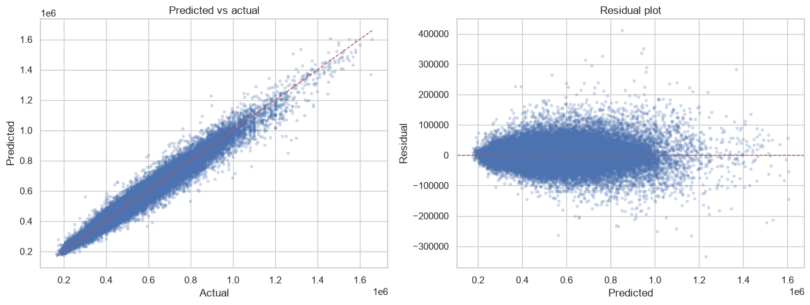
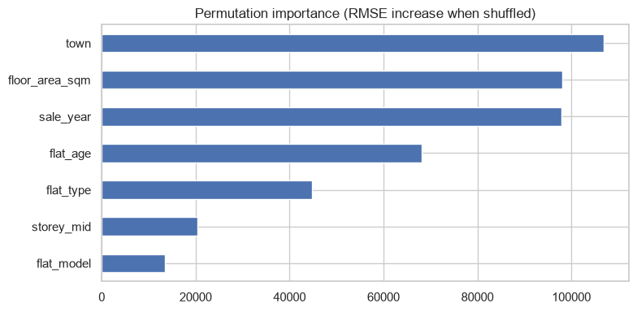
Reading the output#
Metric |
Reading |
|---|---|
RMSE |
Same units as the target. Punishes large errors heavily. The default report metric. |
MAE |
Typical error size in target units. Less sensitive to a few big misses. |
R² |
Share of variance explained. Compares models on the same target only — never across datasets. |
Diagnostics:
Residual funnel (spread widening with predicted value) — variance is not constant. Try modelling
log(price)instead, then exponentiate predictions back.Curved residuals — a relationship the model has not captured. Add an interaction or a non-linear term.
Train RMSE far below CV RMSE — overfitting. Reduce
max_depth, lowern_estimators, or increase regularisation.
Gotcha: permutation_importance on the training set flatters the model. Always
compute it on held-out data, as above.
Pipeline 2 — Binary classification, balanced (Titanic)#
When to use#
Signal |
Reading |
|---|---|
Target is a category |
Classification |
Minority class is roughly 30–50% |
Accuracy is meaningful; ROC-AUC is a fair summary |
You want probabilities, not just labels |
Use |
The one structural difference from Pipeline 1: every split must be stratified, so
the class ratio is preserved in each fold. StratifiedKFold and
train_test_split(..., stratify=y) handle this.
# =============================================================================
# PIPELINE 2 — BINARY CLASSIFICATION (balanced): Titanic survival
# =============================================================================
# ---- 1. Load ----------------------------------------------------------------
# Needs internet the first time. Offline: pd.read_csv("data/titanic.csv")
df = sns.load_dataset("titanic")
print(df.shape)
print(df["survived"].value_counts(normalize=True)) # ~62/38 — comfortably balanced
# ---- 2. Define X and y ------------------------------------------------------
TARGET = "survived"
num_features = ["age", "fare", "sibsp", "parch"]
cat_features = ["pclass", "sex", "embarked", "alone"]
X = df[num_features + cat_features]
y = df[TARGET]
# ---- 3. Stratified split ----------------------------------------------------
# stratify=y keeps the 62/38 ratio in both halves. Without it, a lucky split can
# hand you a test set with a different class balance and misleading metrics.
X_train, X_test, y_train, y_test = train_test_split(
X, y, test_size=0.2, stratify=y, random_state=RANDOM_STATE
)
# ---- 4. Preprocessing -------------------------------------------------------
preprocessor = ColumnTransformer([
("num", Pipeline([
("impute", SimpleImputer(strategy="median")),
("scale", StandardScaler()), # essential for LogisticRegression
]), num_features),
("cat", Pipeline([
("impute", SimpleImputer(strategy="most_frequent")),
("onehot", OneHotEncoder(handle_unknown="ignore", sparse_output=False)),
]), cat_features),
])
# ---- 5. Baseline + comparison -----------------------------------------------
cv = StratifiedKFold(n_splits=5, shuffle=True, random_state=RANDOM_STATE)
candidates = {
"logreg": LogisticRegression(max_iter=1000, random_state=RANDOM_STATE),
"rf": RandomForestClassifier(n_estimators=300, random_state=RANDOM_STATE, n_jobs=-1),
"xgb": xgb.XGBClassifier(
n_estimators=300, learning_rate=0.1, max_depth=4,
eval_metric="logloss", random_state=RANDOM_STATE, n_jobs=-1,
),
}
for name, model in candidates.items():
pipe = Pipeline([("prep", preprocessor), ("model", model)])
# cross_validate returns several metrics in one pass over the folds
res = cross_validate(
pipe, X_train, y_train, cv=cv,
scoring=["accuracy", "f1", "roc_auc"], n_jobs=-1,
)
print(f"{name:7s} acc {res['test_accuracy'].mean():.3f} | "
f"f1 {res['test_f1'].mean():.3f} | auc {res['test_roc_auc'].mean():.3f}")
# ---- 6. Tune ----------------------------------------------------------------
param_grid = {
"model__n_estimators": [200, 400],
"model__max_depth": [3, 5, None],
"model__min_samples_leaf": [1, 2, 4], # larger leaves = smoother, less overfit
}
search = GridSearchCV(
Pipeline([("prep", preprocessor), ("model", candidates["rf"])]),
param_grid, cv=cv, scoring="roc_auc", n_jobs=-1,
)
search.fit(X_train, y_train)
print(f"best CV AUC: {search.best_score_:.3f} {search.best_params_}")
best_model = search.best_estimator_
# ---- 7. Evaluate ------------------------------------------------------------
y_pred = best_model.predict(X_test) # labels at the 0.5 threshold
y_proba = best_model.predict_proba(X_test)[:, 1] # column 1 = P(class 1) = P(survived)
print(classification_report(y_test, y_pred, target_names=["died", "survived"]))
print(f"ROC-AUC: {roc_auc_score(y_test, y_proba):.3f}")
fig, axes = plt.subplots(1, 2, figsize=(12, 5))
ConfusionMatrixDisplay.from_predictions(
y_test, y_pred, display_labels=["died", "survived"], ax=axes[0], colorbar=False
)
axes[0].set_title("Confusion matrix")
RocCurveDisplay.from_predictions(y_test, y_proba, ax=axes[1])
axes[1].plot([0, 1], [0, 1], "k--", lw=1) # diagonal = random guessing
axes[1].set_title("ROC curve")
plt.tight_layout(); plt.show()
# ---- 8. Interpret -----------------------------------------------------------
perm = permutation_importance(
best_model, X_test, y_test, n_repeats=10,
random_state=RANDOM_STATE, scoring="roc_auc", n_jobs=-1,
)
(pd.Series(perm.importances_mean, index=X_test.columns)
.sort_values().plot(kind="barh", figsize=(7, 4)))
plt.title("Permutation importance (AUC drop when shuffled)")
plt.tight_layout(); plt.show()
(891, 15)
survived
0 0.616162
1 0.383838
Name: proportion, dtype: float64
logreg acc 0.796 | f1 0.723 | auc 0.856
rf acc 0.798 | f1 0.729 | auc 0.862
xgb acc 0.810 | f1 0.750 | auc 0.879
best CV AUC: 0.877 {'model__max_depth': None, 'model__min_samples_leaf': 4, 'model__n_estimators': 200}
precision recall f1-score support
died 0.80 0.92 0.85 110
survived 0.83 0.62 0.71 69
accuracy 0.80 179
macro avg 0.81 0.77 0.78 179
weighted avg 0.81 0.80 0.80 179
ROC-AUC: 0.836
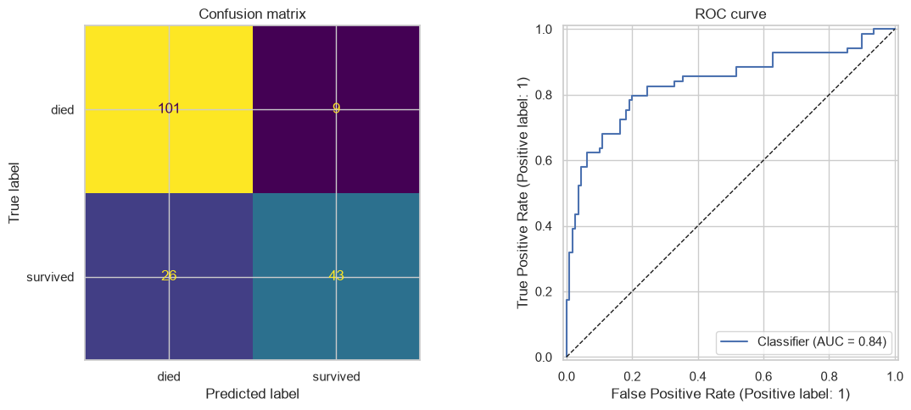
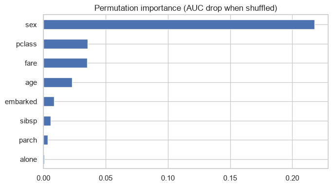
Reading the output#
Metric |
Question it answers |
|---|---|
Accuracy |
Of all predictions, how many were right? Trustworthy only when classes are balanced. |
Precision |
Of everything I flagged positive, how much really was? |
Recall |
Of all the real positives, how many did I catch? |
F1 |
Harmonic mean of precision and recall — one number when both matter. |
ROC-AUC |
Probability a random positive is ranked above a random negative. Threshold-free. |
Confusion matrix orientation in sklearn — rows are true, columns are predicted:
Pred 0 |
Pred 1 |
|
|---|---|---|
True 0 |
TN |
FP |
True 1 |
FN |
TP |
Gotcha: .predict() silently applies a 0.5 threshold. That is a business decision,
not a statistical one. If a false negative costs more than a false positive, move the
threshold — see Pipeline 3.
Pipeline 3 — Imbalanced classification (SECOM defect prediction)#
When to use#
Signal |
Reading |
|---|---|
Minority class under ~10% |
Accuracy becomes meaningless — predicting all-majority scores well |
The rare class is the one you care about |
Optimise recall or average precision, never accuracy |
Cost of a miss ≠ cost of a false alarm |
The decision threshold must be tuned deliberately |
SECOM is ~6.6% fail. A model that predicts “pass” for every wafer scores 93% accuracy and is worthless.
Three levers, and what each actually does#
Lever |
Mechanism |
Trade-off |
|---|---|---|
|
Errors on the rare class cost more in the loss function |
Free, no new data, always try first |
|
Same idea, XGBoost’s own parameter. Set to |
Same |
SMOTE |
Synthesises new minority rows by interpolating between neighbours |
Can invent implausible rows; must sit inside the CV fold |
The SMOTE trap: resampling before splitting leaks synthetic rows derived from test
data into training. imblearn.pipeline.Pipeline resamples training folds only — that is
why the cell below imports Pipeline from imblearn, not sklearn.
Metric choice#
Use average precision (area under the PR curve), not ROC-AUC. With a rare positive class, ROC-AUC looks flattering because the huge true-negative count dominates the false positive rate.
# =============================================================================
# PIPELINE 3 — IMBALANCED CLASSIFICATION: SECOM pass/fail
# =============================================================================
from imblearn.over_sampling import SMOTE
from imblearn.pipeline import Pipeline as ImbPipeline # NOT sklearn's Pipeline
# ---- 1. Load ----------------------------------------------------------------
df_secom = pd.read_csv(SECOM_PATH)
print(df_secom.shape)
df_secom.head()
# Split into time, features, target. Sensor columns are everything except
# Time and Pass/Fail, whatever they happen to be named or numbered.
non_feature_cols = ["Time", "Pass/Fail"]
sensor_cols = [c for c in df_secom.columns if c not in non_feature_cols]
X_raw = df_secom[sensor_cols].copy()
X_raw.columns = [f"sensor_{i}" for i in range(X_raw.shape[1])]
# Original labels: -1 = pass, 1 = fail. Map to 0/1 so "1" is the event of interest.
y = (df_secom["Pass/Fail"] == 1).astype(int)
print(f"X: {X_raw.shape} fail rate: {y.mean():.3%}")
print(y.value_counts())
# ---- 2. Column-level cleaning (before splitting — see note below) ------------
missing_frac = X_raw.isna().mean()
X_clean = X_raw.loc[:, missing_frac < 0.5] # drop mostly-empty sensors
X_clean = X_clean.loc[:, X_clean.nunique(dropna=True) > 1] # drop constant sensors
print(f"after cleaning: {X_clean.shape}")
# ---- 3. Stratified split ----------------------------------------------------
X_train, X_test, y_train, y_test = train_test_split(
X_clean, y, test_size=0.2, stratify=y, random_state=RANDOM_STATE
)
print(f"train fails: {y_train.sum()} test fails: {y_test.sum()}")
# ---- 4. Preprocessing — all numeric here, so no ColumnTransformer needed ----
preprocessor = Pipeline([
("impute", SimpleImputer(strategy="median")),
("scale", StandardScaler()),
])
# ---- 5. Compare the three imbalance strategies ------------------------------
cv = StratifiedKFold(n_splits=5, shuffle=True, random_state=RANDOM_STATE)
neg, pos = (y_train == 0).sum(), (y_train == 1).sum()
strategies = {
"logreg_weighted": Pipeline([
("prep", preprocessor),
("model", LogisticRegression(
max_iter=2000, class_weight="balanced", random_state=RANDOM_STATE)),
]),
"rf_weighted": Pipeline([
("prep", preprocessor),
("model", RandomForestClassifier(
n_estimators=400, class_weight="balanced_subsample",
random_state=RANDOM_STATE, n_jobs=-1)),
]),
"xgb_scaled": Pipeline([
("prep", preprocessor),
("model", xgb.XGBClassifier(
n_estimators=400, learning_rate=0.05, max_depth=4,
scale_pos_weight=neg / pos, # the XGBoost equivalent of class_weight
eval_metric="aucpr", random_state=RANDOM_STATE, n_jobs=-1)),
]),
# imblearn's Pipeline does not allow a nested Pipeline as a step, so the
# impute/scale steps are inlined here instead of reusing `preprocessor`.
"smote_xgb": ImbPipeline([
("impute", SimpleImputer(strategy="median")),
("scale", StandardScaler()),
("smote", SMOTE(random_state=RANDOM_STATE, k_neighbors=5)),
("model", xgb.XGBClassifier(
n_estimators=400, learning_rate=0.05, max_depth=4,
eval_metric="aucpr", random_state=RANDOM_STATE, n_jobs=-1)),
]),
}
for name, pipe in strategies.items():
res = cross_validate(
pipe, X_train, y_train, cv=cv,
scoring=["average_precision", "recall", "roc_auc"], n_jobs=-1,
)
print(f"{name:16s} AP {res['test_average_precision'].mean():.3f} | "
f"recall {res['test_recall'].mean():.3f} | "
f"auc {res['test_roc_auc'].mean():.3f}")
# ---- 6. Tune the best strategy ----------------------------------------------
# RandomizedSearchCV over a wide space beats GridSearchCV when the grid is large:
# it samples n_iter combinations instead of trying every one.
param_dist = {
"model__max_depth": [3, 4, 5, 6],
"model__learning_rate": [0.01, 0.05, 0.1],
"model__n_estimators": [300, 600, 900],
"model__subsample": [0.6, 0.8, 1.0],
"model__colsample_bytree": [0.3, 0.5, 0.8], # low values help when features >> samples
"model__min_child_weight": [1, 5, 10],
}
search = RandomizedSearchCV(
strategies["xgb_scaled"], param_dist,
n_iter=30, cv=cv,
scoring="average_precision", # NOT accuracy, NOT roc_auc
random_state=RANDOM_STATE, n_jobs=-1, verbose=1,
)
search.fit(X_train, y_train)
print(f"best CV AP: {search.best_score_:.3f} {search.best_params_}")
best_model = search.best_estimator_
# ---- 7. Threshold tuning — the step most people skip ------------------------
y_proba = best_model.predict_proba(X_test)[:, 1]
precision, recall, thresholds = precision_recall_curve(y_test, y_proba)
# Pick the threshold that maximises F1. Alternative: fix a recall target
# ("catch 80% of defects") and accept whatever precision comes with it.
f1_scores = 2 * precision * recall / (precision + recall + 1e-9)
best_idx = np.argmax(f1_scores[:-1]) # last point has no matching threshold
best_threshold = thresholds[best_idx]
print(f"best threshold: {best_threshold:.3f} (default is 0.5)")
print(f" -> precision {precision[best_idx]:.3f}, recall {recall[best_idx]:.3f}")
y_pred_default = (y_proba >= 0.5).astype(int)
y_pred_tuned = (y_proba >= best_threshold).astype(int)
print("\n--- default 0.5 threshold ---")
print(classification_report(y_test, y_pred_default, target_names=["pass", "fail"]))
print("--- tuned threshold ---")
print(classification_report(y_test, y_pred_tuned, target_names=["pass", "fail"]))
# ---- 8. Evaluate and visualise ----------------------------------------------
print(f"Average precision: {average_precision_score(y_test, y_proba):.3f}")
print(f"Baseline (= fail rate): {y_test.mean():.3f}") # what random guessing scores
fig, axes = plt.subplots(1, 2, figsize=(12, 5))
PrecisionRecallDisplay.from_predictions(y_test, y_proba, ax=axes[0])
axes[0].axhline(y_test.mean(), color="r", ls="--", lw=1, label="random baseline")
axes[0].legend(); axes[0].set_title("Precision-Recall curve")
ConfusionMatrixDisplay.from_predictions(
y_test, y_pred_tuned, display_labels=["pass", "fail"], ax=axes[1], colorbar=False
)
axes[1].set_title(f"Confusion matrix @ {best_threshold:.2f}")
plt.tight_layout(); plt.show()
# ---- 9. Which sensors matter ------------------------------------------------
importances = pd.Series(
best_model.named_steps["model"].feature_importances_, index=X_train.columns
).sort_values(ascending=False)
plt.figure(figsize=(8, 5))
importances.head(20).plot(kind="barh").invert_yaxis()
plt.title("Top 20 sensors by XGBoost gain")
plt.tight_layout(); plt.show()
(1567, 592)
X: (1567, 590) fail rate: 6.637%
Pass/Fail
0 1463
1 104
Name: count, dtype: int64
after cleaning: (1567, 446)
train fails: 83 test fails: 21
logreg_weighted AP 0.168 | recall 0.265 | auc 0.617
rf_weighted AP 0.202 | recall 0.000 | auc 0.696
xgb_scaled AP 0.181 | recall 0.037 | auc 0.672
smote_xgb AP 0.165 | recall 0.035 | auc 0.665
Fitting 5 folds for each of 30 candidates, totalling 150 fits
best CV AP: 0.207 {'model__subsample': 0.6, 'model__n_estimators': 900, 'model__min_child_weight': 1, 'model__max_depth': 5, 'model__learning_rate': 0.05, 'model__colsample_bytree': 0.3}
best threshold: 0.018 (default is 0.5)
-> precision 0.220, recall 0.524
--- default 0.5 threshold ---
precision recall f1-score support
pass 0.93 1.00 0.96 293
fail 0.00 0.00 0.00 21
accuracy 0.93 314
macro avg 0.47 0.50 0.48 314
weighted avg 0.87 0.93 0.90 314
--- tuned threshold ---
precision recall f1-score support
pass 0.96 0.87 0.91 293
fail 0.22 0.52 0.31 21
accuracy 0.84 314
macro avg 0.59 0.70 0.61 314
weighted avg 0.91 0.84 0.87 314
Average precision: 0.169
Baseline (= fail rate): 0.067
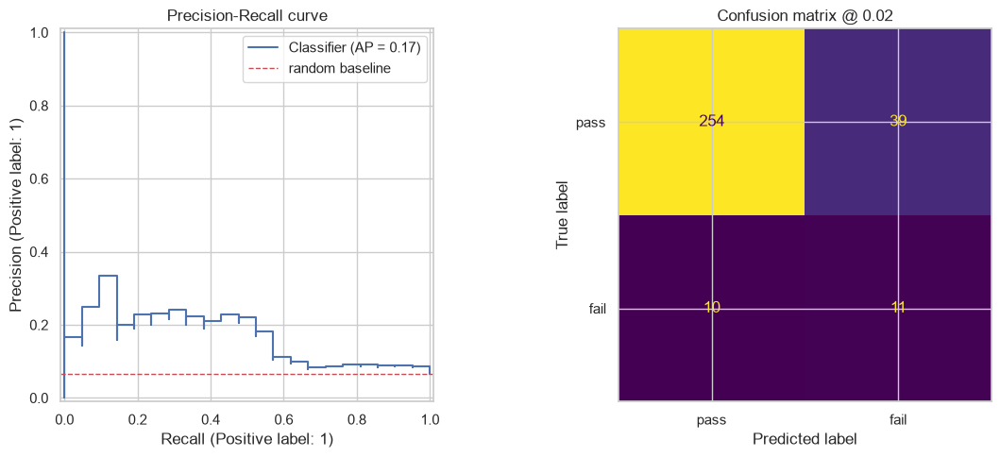
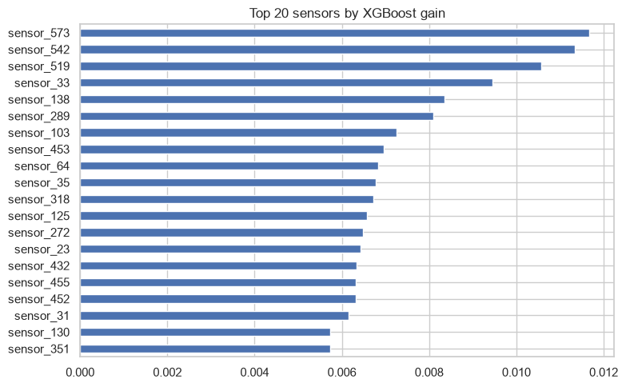
Reading the output#
Metric |
Why it is here |
|---|---|
Average precision |
Area under the PR curve. The headline metric for rare positives. |
Recall |
Share of true defects caught. Usually the business priority. |
Precision |
Share of flagged units that really are defective. Drives inspection cost. |
ROC-AUC |
Reported for comparison only — it will look better than reality here. |
How to judge average precision: compare it against the positive class rate. At a 6.6% fail rate, random guessing scores AP ≈ 0.066. AP = 0.20 is a 3× lift, and that can be genuinely useful even though it sounds low.
Threshold framing. Lowering the threshold raises recall and lowers precision. The right point depends on relative cost: if a missed defect costs far more than an extra inspection, push recall up and accept the false alarms.
Gotcha: if class_weight="balanced" and SMOTE perform about the same, prefer
class_weight — it is simpler, faster, and invents nothing.
Pipeline 4 — High-dimensional data (SECOM, 591 features)#
When to use#
Signal |
Reading |
|---|---|
Features approach or exceed sample count |
High variance risk — the model can memorise noise |
Many features are near-duplicates |
Correlated sensors measuring the same physical thing |
You want visualisation in 2D |
PCA gives you coordinates to plot |
SECOM’s 591 features against 1,567 samples is a ratio of roughly 1:2.6. Every extra feature gives the model another chance to fit noise.
Reduce dimensions in this order#
Step |
Removes |
Uses the target? |
|---|---|---|
1. Drop high-missing columns |
Sensors that are mostly empty |
No — safe before split |
2. |
Constant or near-constant sensors |
No — but fit inside the pipeline anyway |
3. Correlation filter |
Redundant duplicates |
No |
4. |
Remaining shared variance |
No |
5. Model-based selection |
Features the model ignores |
Yes — must sit inside CV |
Steps 4 and 5 belong inside the Pipeline, so each CV fold refits them.
What PCA costs you#
PCA components are weighted blends of every original sensor. You gain stability and speed; you lose the ability to say “sensor 104 drives this”. If a process engineer needs to act on the finding, either keep original features or trace back through the component loadings, as the cell does at the end.
# =============================================================================
# PIPELINE 4 — HIGH-DIMENSIONAL: PCA on SECOM's 591 sensors
# =============================================================================
# ---- 1. Load and clean (same as Pipeline 3) ---------------------------------
df_secom = pd.read_csv(SECOM_PATH)
non_feature_cols = ["Time", "Pass/Fail"]
sensor_cols = [c for c in df_secom.columns if c not in non_feature_cols]
X_raw = df_secom[sensor_cols].copy()
X_raw.columns = [f"sensor_{i}" for i in range(X_raw.shape[1])]
y = (df_secom["Pass/Fail"] == 1).astype(int)
X_clean = X_raw.loc[:, X_raw.isna().mean() < 0.5]
print(f"{X_raw.shape[1]} sensors -> {X_clean.shape[1]} after dropping mostly-empty")
# ---- 2. Correlation filter --------------------------------------------------
# Keep one sensor from each group of near-duplicates. Uses no target information.
corr = X_clean.corr().abs()
upper = corr.where(np.triu(np.ones(corr.shape), k=1).astype(bool))
redundant = [c for c in upper.columns if any(upper[c] > 0.95)]
X_clean = X_clean.drop(columns=redundant)
print(f"dropped {len(redundant)} correlated sensors -> {X_clean.shape[1]} remain")
# ---- 3. Split ---------------------------------------------------------------
X_train, X_test, y_train, y_test = train_test_split(
X_clean, y, test_size=0.2, stratify=y, random_state=RANDOM_STATE
)
# ---- 4. Inspect the variance structure before committing to n_components ----
# Standalone PCA fit on training data only, purely to read the scree curve.
explore = Pipeline([
("impute", SimpleImputer(strategy="median")),
("scale", StandardScaler()), # PCA without scaling is dominated by large-range sensors
("variance", VarianceThreshold(threshold=0.0)),
("pca", PCA(random_state=RANDOM_STATE)),
]).fit(X_train)
evr = explore.named_steps["pca"].explained_variance_ratio_
cumulative = np.cumsum(evr)
n_for_95 = np.argmax(cumulative >= 0.95) + 1
print(f"{n_for_95} components capture 95% of the variance "
f"(from {X_train.shape[1]} sensors)")
fig, axes = plt.subplots(1, 2, figsize=(12, 4))
axes[0].plot(range(1, 31), evr[:30], "o-")
axes[0].set(xlabel="Component", ylabel="Explained variance ratio",
title="Scree plot (first 30)")
axes[1].plot(range(1, len(cumulative) + 1), cumulative)
axes[1].axhline(0.95, color="r", ls="--", lw=1)
axes[1].axvline(n_for_95, color="r", ls="--", lw=1)
axes[1].set(xlabel="Number of components", ylabel="Cumulative variance",
title="Cumulative explained variance")
plt.tight_layout(); plt.show()
# ---- 5. Compare: full features vs PCA ---------------------------------------
cv = StratifiedKFold(n_splits=5, shuffle=True, random_state=RANDOM_STATE)
neg, pos = (y_train == 0).sum(), (y_train == 1).sum()
full_pipe = Pipeline([
("impute", SimpleImputer(strategy="median")),
("scale", StandardScaler()),
("model", LogisticRegression(max_iter=3000, class_weight="balanced",
random_state=RANDOM_STATE)),
])
pca_pipe = Pipeline([
("impute", SimpleImputer(strategy="median")),
("scale", StandardScaler()),
("variance", VarianceThreshold(threshold=0.0)),
("pca", PCA(n_components=0.95, random_state=RANDOM_STATE)), # float = keep 95% variance
("model", LogisticRegression(max_iter=3000, class_weight="balanced",
random_state=RANDOM_STATE)),
])
for name, pipe in {"full_features": full_pipe, "pca_95": pca_pipe}.items():
scores = cross_val_score(pipe, X_train, y_train, cv=cv,
scoring="average_precision", n_jobs=-1)
print(f"{name:14s} AP {scores.mean():.3f} (+/- {scores.std():.3f})")
# ---- 6. Tune the number of components jointly with the model ---------------
# n_components is a hyperparameter like any other — do not fix it by eye.
param_grid = {
"pca__n_components": [10, 20, 40, 80],
"model__C": [0.01, 0.1, 1.0], # inverse regularisation: smaller = stronger
}
search = GridSearchCV(pca_pipe, param_grid, cv=cv,
scoring="average_precision", n_jobs=-1)
search.fit(X_train, y_train)
print(f"best CV AP: {search.best_score_:.3f} {search.best_params_}")
best_model = search.best_estimator_
# ---- 7. Evaluate ------------------------------------------------------------
y_proba = best_model.predict_proba(X_test)[:, 1]
print(f"test AP: {average_precision_score(y_test, y_proba):.3f} "
f"(baseline {y_test.mean():.3f})")
# ---- 8. Visualise the data in the first two components ----------------------
Z = best_model[:-1].transform(X_test) # every step except the final classifier
plt.figure(figsize=(7, 6))
plt.scatter(Z[y_test == 0, 0], Z[y_test == 0, 1], s=12, alpha=0.4, label="pass")
plt.scatter(Z[y_test == 1, 0], Z[y_test == 1, 1], s=28, alpha=0.9,
c="red", label="fail")
plt.xlabel("PC1"); plt.ylabel("PC2")
plt.title("Test set in PCA space")
plt.legend(); plt.tight_layout(); plt.show()
# ---- 9. Trace components back to original sensors ---------------------------
# Loadings tell you which sensors a component is built from — the bridge back
# to something a process engineer can act on.
pca_step = best_model.named_steps["pca"]
kept_mask = best_model.named_steps["variance"].get_support()
kept_names = X_train.columns[kept_mask]
loadings = pd.DataFrame(
pca_step.components_[:3].T, index=kept_names, columns=["PC1", "PC2", "PC3"]
)
print("Sensors loading most heavily on PC1:")
print(loadings["PC1"].abs().sort_values(ascending=False).head(10))
590 sensors -> 562 after dropping mostly-empty
dropped 174 correlated sensors -> 388 remain
163 components capture 95% of the variance (from 388 sensors)
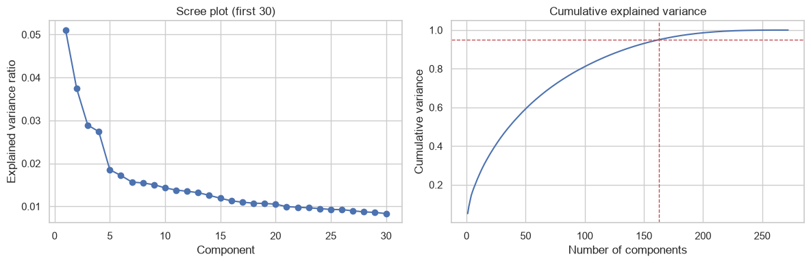
full_features AP 0.166 (+/- 0.080)
pca_95 AP 0.133 (+/- 0.053)
best CV AP: 0.175 {'model__C': 1.0, 'pca__n_components': 20}
test AP: 0.153 (baseline 0.067)
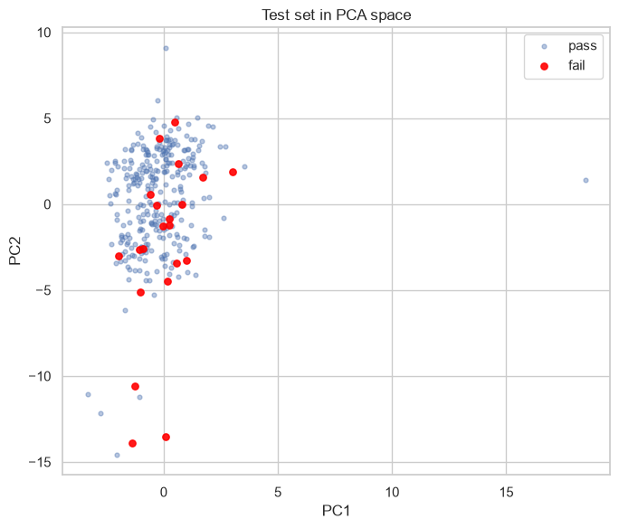
Sensors loading most heavily on PC1:
sensor_196 0.256204
sensor_207 0.249606
sensor_199 0.249273
sensor_204 0.242290
sensor_197 0.235861
sensor_336 0.235267
sensor_203 0.232190
sensor_471 0.231412
sensor_205 0.229853
sensor_67 0.224882
Name: PC1, dtype: float64
Reading the output#
Scree plot — the elbow marks where extra components stop buying much variance.
n_components=0.95 lets sklearn pick the count for you; an integer fixes it.
Outcome |
Interpretation |
|---|---|
PCA matches full features with far fewer dimensions |
Redundancy confirmed — keep PCA for speed and stability |
PCA clearly worse |
Discriminative signal lived in a low-variance direction. PCA maximises variance, not class separation — it does not know your target exists |
PCA clearly better |
The full model was overfitting noise |
Gotcha: always scale before PCA. Without it, a sensor measuring in thousands dominates every component regardless of its actual importance.
Gotcha: PC1 explaining a large share of variance does not mean PC1 predicts the target. Variance and predictive power are unrelated quantities.
Pipeline 5 — Clustering (HDB market segmentation)#
When to use#
Signal |
Reading |
|---|---|
No target variable at all |
Unsupervised |
You want to discover groups, not predict known ones |
Clustering |
You need segment profiles for a stakeholder |
KMeans + a profile table |
What changes versus supervised pipelines#
Aspect |
Difference |
|---|---|
Train/test split |
Not needed — nothing is being predicted |
Scaling |
Non-negotiable. KMeans measures Euclidean distance, so unscaled large-range features dominate entirely |
Choosing k |
No ground truth. Use elbow + silhouette + whether the segments make business sense |
Validation |
Silhouette score, and stakeholder judgement |
Clustering uses all features simultaneously — each row becomes a point in p-dimensional space and distance is computed across every dimension at once. That is why one unscaled feature can hijack the whole result.
# =============================================================================
# PIPELINE 5 — CLUSTERING: segmenting HDB resale flats
# =============================================================================
# ---- 1. Load and engineer ---------------------------------------------------
df = pd.read_csv(HDB_PATH)
df["month"] = pd.to_datetime(df["month"])
df["flat_age"] = df["month"].dt.year - df["lease_commence_date"]
storey_bounds = df["storey_range"].str.extract(r"(\d+)\s+TO\s+(\d+)").astype(float)
df["storey_mid"] = storey_bounds.mean(axis=1)
df["price_psm"] = df["resale_price"] / df["floor_area_sqm"]
# ---- 2. Choose features — clustering has no target, so this defines everything
# Different feature sets produce different, equally "valid" clusterings.
# Pick features that answer the question you actually care about.
features = ["floor_area_sqm", "flat_age", "storey_mid", "price_psm", "resale_price"]
X = df[features].dropna()
print(X.shape)
# ---- 3. Scale — required, not optional --------------------------------------
# resale_price is in hundreds of thousands, flat_age in tens. Without scaling,
# distance is effectively price alone and the other four features are ignored.
scaler = StandardScaler()
X_scaled = scaler.fit_transform(X)
# ---- 4. Choose k: elbow and silhouette together -----------------------------
k_range = range(2, 11)
inertias, silhouettes = [], []
# Silhouette is O(n^2) — sample for speed on large datasets.
sample_idx = np.random.RandomState(RANDOM_STATE).choice(
len(X_scaled), size=min(5000, len(X_scaled)), replace=False
)
for k in k_range:
km = KMeans(n_clusters=k, random_state=RANDOM_STATE, n_init=10)
labels = km.fit_predict(X_scaled)
inertias.append(km.inertia_) # within-cluster sum of squares — always falls with k
silhouettes.append(silhouette_score(X_scaled[sample_idx], labels[sample_idx]))
fig, axes = plt.subplots(1, 2, figsize=(12, 4))
axes[0].plot(k_range, inertias, "o-")
axes[0].set(xlabel="k", ylabel="Inertia", title="Elbow method")
axes[1].plot(k_range, silhouettes, "o-")
axes[1].set(xlabel="k", ylabel="Silhouette score", title="Silhouette by k")
plt.tight_layout(); plt.show()
best_k = k_range[int(np.argmax(silhouettes))]
print(f"highest silhouette at k={best_k}")
# ---- 5. Fit the final model -------------------------------------------------
K = 4 # override with a business-sensible number if the metrics are ambiguous
kmeans = KMeans(n_clusters=K, random_state=RANDOM_STATE, n_init=10)
labels = kmeans.fit_predict(X_scaled)
X_labelled = X.copy()
X_labelled["cluster"] = labels
# ---- 6. Profile the clusters — this IS the deliverable ----------------------
# A cluster number means nothing until you can describe it in plain language.
profile = X_labelled.groupby("cluster").agg(["mean", "count"]).round(1)
print(profile)
print("\nCluster sizes:")
print(X_labelled["cluster"].value_counts().sort_index())
# ---- 7. Visualise in 2D via PCA ---------------------------------------------
# PCA is used here purely for plotting — the clustering happened in 5D.
coords = PCA(n_components=2, random_state=RANDOM_STATE).fit_transform(X_scaled)
plt.figure(figsize=(8, 6))
for c in range(K):
mask = labels == c
plt.scatter(coords[mask, 0], coords[mask, 1], s=6, alpha=0.4, label=f"cluster {c}")
plt.xlabel("PC1"); plt.ylabel("PC2")
plt.title(f"KMeans k={K}, projected to 2D")
plt.legend(); plt.tight_layout(); plt.show()
# ---- 8. Compare clusters on each feature ------------------------------------
fig, axes = plt.subplots(1, len(features), figsize=(4 * len(features), 4))
for ax, feat in zip(axes, features):
sns.boxplot(data=X_labelled, x="cluster", y=feat, ax=ax)
ax.set_title(feat)
plt.tight_layout(); plt.show()
(234672, 5)
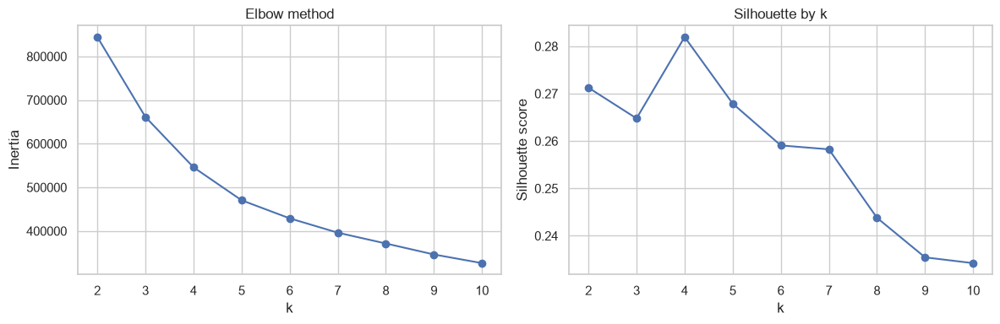
highest silhouette at k=4
floor_area_sqm flat_age storey_mid price_psm \
mean count mean count mean count mean
cluster
0 74.1 65348 40.4 65348 6.8 65348 5029.4
1 88.9 60600 8.6 60600 9.3 60600 5916.0
2 119.0 84244 27.9 84244 7.3 84244 4768.5
3 99.4 24480 13.6 24480 17.7 24480 8825.6
resale_price
count mean count
cluster
0 65348 370617.0 65348
1 60600 519586.4 60600
2 84244 569001.2 84244
3 24480 863809.8 24480
Cluster sizes:
cluster
0 65348
1 60600
2 84244
3 24480
Name: count, dtype: int64
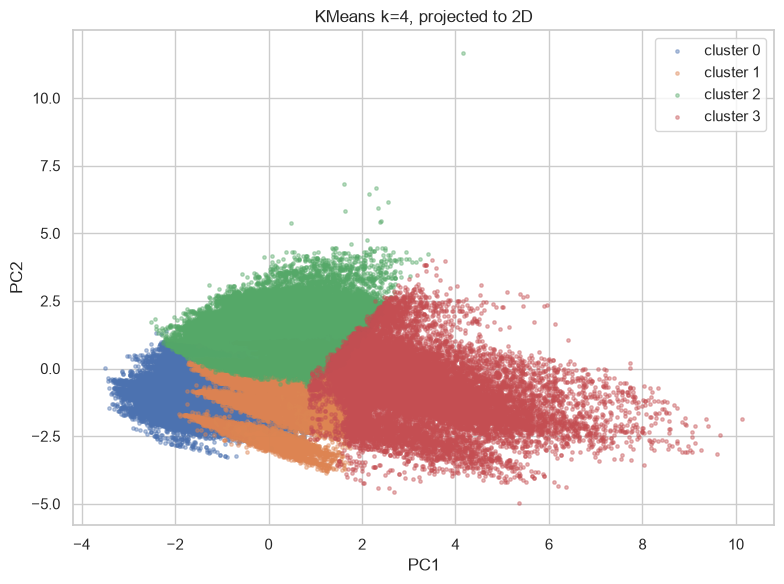
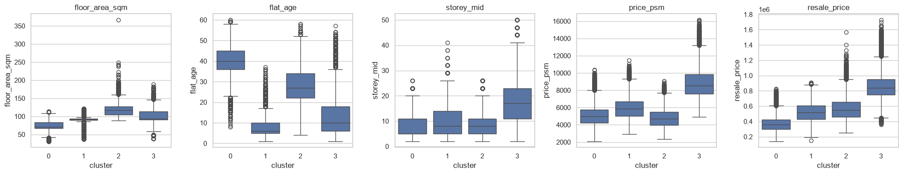
Reading the output#
Silhouette score |
Reading |
|---|---|
Above 0.7 |
Strong, well-separated structure |
0.5 – 0.7 |
Reasonable structure |
0.25 – 0.5 |
Weak — clusters overlap heavily |
Below 0.25 |
No meaningful cluster structure found |
Real tabular business data often lands in the 0.2–0.4 range. That does not make the segments useless; it means the boundaries are soft.
Elbow versus silhouette. Inertia always decreases as k rises, so it can never pick k alone — you are looking for the bend. Silhouette actually has a maximum. When the two disagree, the tiebreaker is whether you can name the segments in a sentence a stakeholder would recognise.
Gotcha: KMeans assumes roughly spherical, similarly sized clusters. If the boxplots
show one cluster containing 95% of rows, try DBSCAN (density-based, finds arbitrary
shapes, and labels outliers as -1).
Gotcha: re-running with a different random_state and getting different clusters
means the structure is unstable. n_init=10 runs ten initialisations and keeps the best.
Pipeline 6 — Anomaly detection (SECOM sensor readings)#
When to use#
Signal |
Reading |
|---|---|
Anomalies are rare and not exhaustively labelled |
Supervised classification would starve for positives |
New failure modes appear that were never labelled |
An unsupervised detector flags “weird”, not “matches known defect” |
You need a monitoring alarm rather than a prediction |
Score every incoming row, alert above a threshold |
Anomaly detection versus imbalanced classification#
Both hunt for rare events. The difference is what they learn:
Imbalanced classification (P3) |
Anomaly detection (P6) |
|
|---|---|---|
Needs labels |
Yes |
No |
Learns |
What known defects look like |
What normal looks like |
Catches novel failure modes |
No |
Yes |
Typically more precise |
Yes |
No |
If you have reliable labels, classify. Reach for anomaly detection when labels are missing, unreliable, or when unknown failure modes are the real concern.
contamination is the key parameter#
It tells the model what fraction of the data to treat as anomalous, which sets the score cutoff. Set it from domain knowledge (a known defect rate), not by guessing.
# =============================================================================
# PIPELINE 6 — ANOMALY DETECTION: flagging unusual SECOM sensor readings
# =============================================================================
# ---- 1. Load ----------------------------------------------------------------
df_secom = pd.read_csv(SECOM_PATH)
non_feature_cols = ["Time", "Pass/Fail"]
sensor_cols = [c for c in df_secom.columns if c not in non_feature_cols]
X_raw = df_secom[sensor_cols].copy()
X_raw.columns = [f"sensor_{i}" for i in range(X_raw.shape[1])]
y_true = (df_secom["Pass/Fail"] == 1).astype(int) # held aside for evaluation ONLY
X_clean = X_raw.loc[:, X_raw.isna().mean() < 0.5]
X_clean = X_clean.loc[:, X_clean.nunique(dropna=True) > 1]
print(f"{X_clean.shape}, true anomaly rate {y_true.mean():.3%}")
# ---- 2. Preprocess ----------------------------------------------------------
# No train/test split: the model is not learning a target, and in production you
# fit on a window of recent normal-operation data and score everything after it.
prep = Pipeline([
("impute", SimpleImputer(strategy="median")),
("scale", StandardScaler()), # distance-based methods need comparable ranges
])
X_prep = prep.fit_transform(X_clean)
CONTAMINATION = 0.066 # set from the known fab defect rate, not guessed
# ---- 3. Isolation Forest ----------------------------------------------------
# Isolates points via random splits. Anomalies need fewer splits to isolate,
# so they sit closer to the root. Handles high dimensions well.
iso = IsolationForest(
n_estimators=200,
contamination=CONTAMINATION, # sets the cutoff on the score distribution
max_samples="auto",
random_state=RANDOM_STATE,
n_jobs=-1,
)
iso_pred = iso.fit_predict(X_prep) # returns -1 (anomaly) or 1 (normal)
iso_score = -iso.score_samples(X_prep) # negate so HIGHER = more anomalous
iso_flag = (iso_pred == -1).astype(int)
# ---- 4. Local Outlier Factor ------------------------------------------------
# Compares each point's local density to its neighbours' — catches anomalies that
# are only unusual relative to their local region, which Isolation Forest can miss.
lof = LocalOutlierFactor(
n_neighbors=20, # smaller = more sensitive to local structure
contamination=CONTAMINATION,
novelty=False, # False = score the training data itself
n_jobs=-1,
)
lof_pred = lof.fit_predict(X_prep)
lof_score = -lof.negative_outlier_factor_
lof_flag = (lof_pred == -1).astype(int)
print(f"IsolationForest flagged {iso_flag.sum()} rows")
print(f"LOF flagged {lof_flag.sum()} rows")
print(f"both agreed on {(iso_flag & lof_flag).sum()} rows")
# ---- 5. Score distributions -------------------------------------------------
fig, axes = plt.subplots(1, 2, figsize=(12, 4))
for ax, (name, score, flag) in zip(axes, [
("Isolation Forest", iso_score, iso_flag),
("Local Outlier Factor", lof_score, lof_flag),
]):
ax.hist(score, bins=60)
ax.axvline(np.quantile(score, 1 - CONTAMINATION), color="r", ls="--",
label=f"cutoff @ {CONTAMINATION:.1%}")
ax.set(xlabel="Anomaly score (higher = more anomalous)", title=name)
ax.legend()
plt.tight_layout(); plt.show()
# ---- 6. Sanity-check against labels -----------------------------------------
# In production you would not have these. Here they answer one question:
# does "statistically weird" overlap at all with "actually defective"?
for name, flag, score in [("IsolationForest", iso_flag, iso_score),
("LOF", lof_flag, lof_score)]:
tp = ((flag == 1) & (y_true == 1)).sum()
precision_at_k = tp / max(flag.sum(), 1)
recall_at_k = tp / y_true.sum()
lift = precision_at_k / y_true.mean()
print(f"{name:16s} precision {precision_at_k:.3f} | recall {recall_at_k:.3f} | "
f"lift {lift:.2f}x | AP {average_precision_score(y_true, score):.3f}")
print(f"\nRandom-guess baseline precision: {y_true.mean():.3f}")
# ---- 7. Visualise flagged points in PCA space -------------------------------
coords = PCA(n_components=2, random_state=RANDOM_STATE).fit_transform(X_prep)
plt.figure(figsize=(8, 6))
plt.scatter(coords[iso_flag == 0, 0], coords[iso_flag == 0, 1],
s=8, alpha=0.3, label="normal")
plt.scatter(coords[iso_flag == 1, 0], coords[iso_flag == 1, 1],
s=30, c="red", alpha=0.8, label="flagged anomaly")
plt.xlabel("PC1"); plt.ylabel("PC2")
plt.title("Isolation Forest flags in PCA space")
plt.legend(); plt.tight_layout(); plt.show()
# ---- 8. Which sensors drove a specific flag? --------------------------------
# Isolation Forest gives no native feature attribution. A practical proxy:
# report the sensors with the largest standardised deviation for that row.
flagged_idx = np.where(iso_flag == 1)[0]
row = flagged_idx[0]
deviation = pd.Series(np.abs(X_prep[row]), index=X_clean.columns)
print(f"\nRow {row} — sensors furthest from their mean (in std devs):")
print(deviation.sort_values(ascending=False).head(10).round(2))
(1567, 446), true anomaly rate 6.637%
IsolationForest flagged 104 rows
LOF flagged 104 rows
both agreed on 42 rows
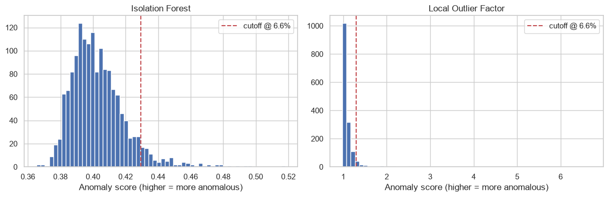
IsolationForest precision 0.144 | recall 0.144 | lift 2.17x | AP 0.119
LOF precision 0.135 | recall 0.135 | lift 2.03x | AP 0.092
Random-guess baseline precision: 0.066
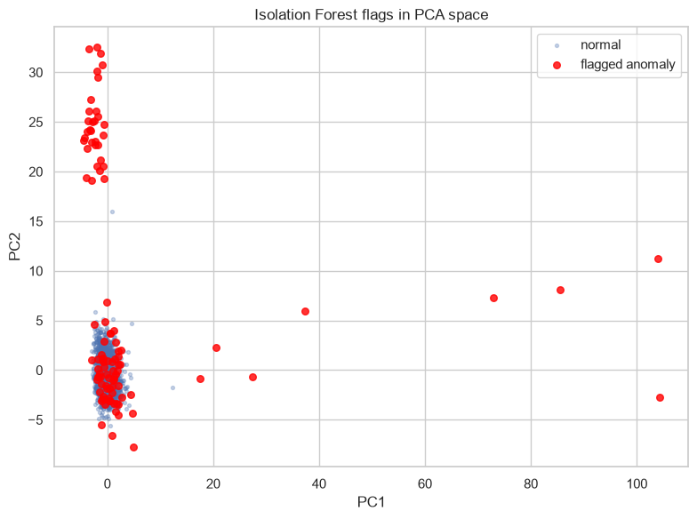
Row 2 — sensors furthest from their mean (in std devs):
sensor_567 6.59
sensor_565 6.47
sensor_558 6.05
sensor_569 5.15
sensor_510 4.91
sensor_38 4.71
sensor_587 3.63
sensor_588 3.32
sensor_55 3.11
sensor_586 2.99
dtype: float64
Reading the output#
Output |
Reading |
|---|---|
Lift |
Precision divided by the base rate. Lift of 2× means flagged rows are twice as likely to be defective as a random row. |
Agreement between methods |
Rows both methods flag are the highest-confidence anomalies. Investigate those first. |
Bimodal score histogram |
A clean separation — good. A smooth unimodal curve means the cutoff is somewhat arbitrary. |
Expect modest numbers. Anomaly detection finds statistical outliers. Not every defect is statistically unusual, and not every unusual reading is a defect. Lift above 1.5× is already useful for prioritising inspection.
Gotcha: fit_predict on LocalOutlierFactor with novelty=False cannot score new
data. To deploy it as a live detector, set novelty=True, call fit() on normal data,
then predict() on new rows.
Gotcha: the sign conventions are inconsistent across sklearn. predict returns
-1 for anomalies but score_samples returns lower values for anomalies. Negate the
scores so higher always means more anomalous, as above.
99 — Building blocks#
Reusable fragments that appear across every pipeline above.
Cross-validation strategy#
Strategy |
Use when |
Notes |
|---|---|---|
|
Regression, independent rows |
Set |
|
Any classification |
Preserves class ratio per fold — mandatory when imbalanced |
|
Rows cluster into groups (same wafer, same lot, same customer) |
Prevents the same group appearing in train and test |
|
Predicting forward in time |
Never shuffle — training must precede test chronologically |
|
Small datasets, noisy scores |
Repeats the whole CV with new splits |
Hyperparameter search#
Method |
How it works |
Best for |
|---|---|---|
|
Tries every combination |
Few parameters, small grid, exhaustive coverage needed |
|
Samples |
Large space, unknown which parameters matter |
Optuna |
Bayesian — each trial informs the next |
Expensive models, large space, limited compute budget |
Rough rule: under about 50 combinations, use grid; above that, random or Optuna.
Metric selection#
Task |
Default metric |
Switch to |
When |
|---|---|---|---|
Regression |
RMSE |
MAE |
Outliers should not dominate |
Regression |
RMSE |
MAPE |
Relative error matters more than absolute |
Classification, balanced |
ROC-AUC |
Accuracy |
Simple reporting to non-technical stakeholders |
Classification, imbalanced |
Average precision |
Recall @ fixed precision |
A specific catch rate is required |
Clustering |
Silhouette |
Davies-Bouldin |
Cross-checking a silhouette result |
Preventing leakage — the checklist#
Rule |
Why |
|---|---|
Split before fitting anything |
Imputer medians and scaler statistics must come from training data only |
Put every transform inside a |
Guarantees each CV fold refits transforms from scratch |
Resample inside |
SMOTE applied before splitting leaks synthetic test rows into training |
Any step that uses |
Feature selection by target correlation is a classic leak |
Touch the test set once, at the very end |
Tuning against test scores turns it into a second training set |
The pattern for pulling components out of a fitted pipeline#
Useful for interpretation, and easy to forget.
# Access a named step
model = best_model.named_steps["model"]
# Every step except the last (i.e. all preprocessing) — returns transformed X
X_transformed = best_model[:-1].transform(X_test)
# Feature names after a ColumnTransformer with OneHotEncoder
feature_names = best_model.named_steps["prep"].get_feature_names_out()
# Which columns survived a VarianceThreshold
kept = best_model.named_steps["variance"].get_support()
# Full parameter list, showing the exact "step__param" keys usable in a search grid
best_model.get_params().keys()
The universal skeleton#
Every supervised pipeline in this notebook is the same nine steps:
# |
Step |
Non-negotiable rule |
|---|---|---|
1 |
Load |
Check |
2 |
Engineer features |
Derived columns before splitting is fine if they use no target |
3 |
Define X and y |
Separate numeric and categorical lists explicitly |
4 |
Split |
Before anything is fitted. Stratify for classification. |
5 |
Build the preprocessor |
Impute before scale; |
6 |
Baseline |
A simple model first, so you know what tuning actually bought |
7 |
Compare families |
Cheap CV across two or three candidates |
8 |
Tune the winner |
Grid, random, or Optuna — scoring on the metric that matters |
9 |
Evaluate and interpret |
Test set once; then residuals, confusion matrix, importances |
Unsupervised pipelines (5 and 6) drop steps 3, 4, and 6, and replace step 9 with profile tables and score distributions.